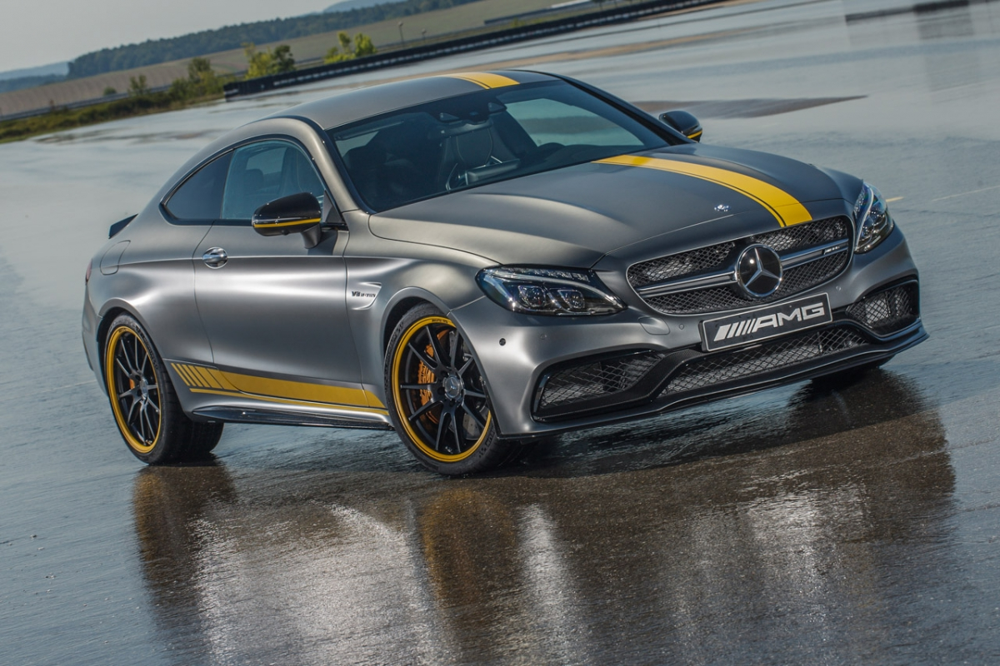

Mercedes c63 AMG

De Mercedes c63 AMG is een hele snele auto. De auto heeft een V8 motor die standaard 510 pk levert. Hij gaat in 4,0 seconden van 0 naar 100 km/h. het heeft een topsnelheid van 250 km/h, als je de begrenzer weg haalt kan de auto 315 km/h. En kost nieuw zo'n 120000 euro.
De auto is zowel geschikt als race auto en als familie auto. Het heeft 4 deuren een een laadruimte van 435L. De auto weegt 1630 kg en heeft een lengte van 4,7 m een hoogte van 1,4 m en een breedte van zo'n 1,8 m.
De W204 C 63 AMG is voorzien van een 6.2-liter V8-motor, die 457 pk (336 kW) levert. Het maximumkoppel is 600 Nm (bij 5.000 toeren per minuut). De auto is standaard voorzien van de AMG Speedshift 7G-TRONIC en kent een sportstand ('S'), comfortstand ('C') en een handmatige functie ('M'). Schakelen kan daardoor met zowel de versnellingspook als de schakelpeddels aan het stuurwiel. De sprint van 0–100 km/u gaat in 4,5 seconden voor de Sedan en 4,6 seconden voor de Estate. De topsnelheid is begrensd op 250 km/u, maar kan naar 280 km/u als je het Performance Package koopt. Zonder begrenzer zou de C 63 315 km/u kunnen halen. Na de facelift kreeg de C 63 AMG een nieuwe AMG Speedshift MCT. Ook werd de auto iets lichter. De Sedan bijvoorbeeld weegt voortaan 1630 kg in plaats van 1655 kg. Ook kwam de auto nu als coupé. De acceleratie naar 100 km/u daalde naar 4,4 sec. voor de sedan en coupé.